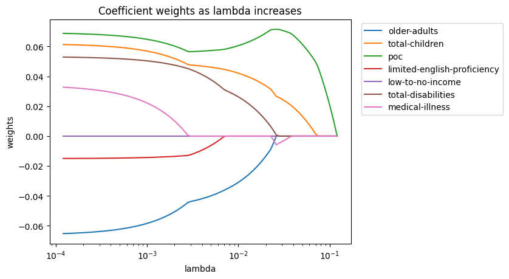
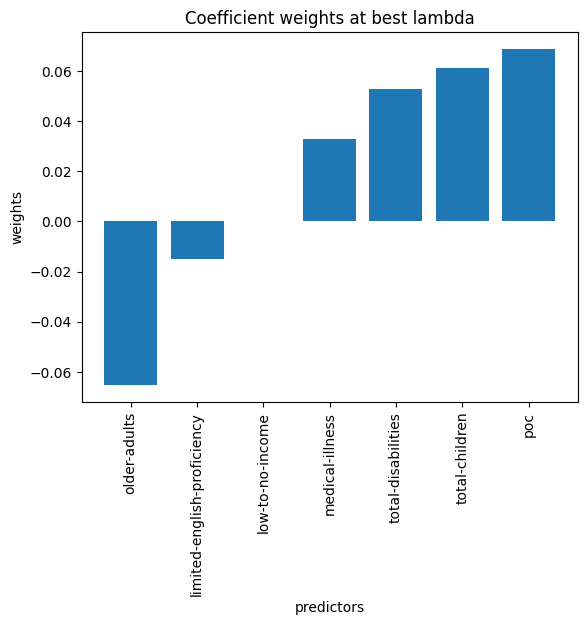

For the extension analysis, we reviewed the Climate Ready Boston Social Vulnerability Dataset to see if we could get any insight on vulnerable groups and CMR410 violations. We used lasso regression to find the effect of the coefficients overtime. Bellow you'll find the results of our model. It's important not to infer anything causal about the results -- especially since we are dealing with groups of vulnerability-- until real life research and surveying is done. We recommend that the Boston city council perform a deeper dive into these communities to find out causes to this occurrence.
 